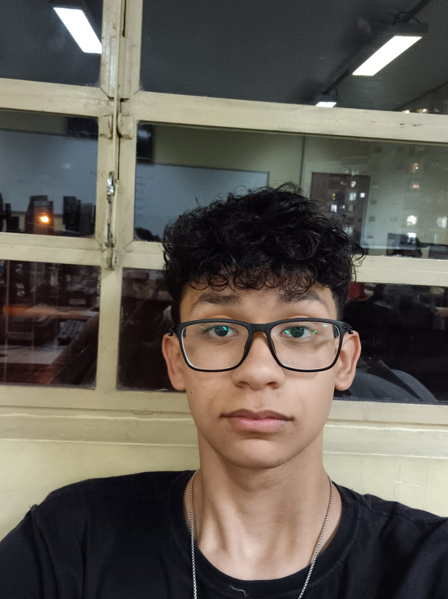

Em busca da primeira oportunidade
Guilherme
Oliveira.
Desenvolvimento, dados
e ideias em movimento.
Estudante de Sistemas de Informação. Construindo soluções e explorando possibilidades com Python, dados e automação.
São Paulo, Brasil / Aprender. Construir. Evoluir.
playground / 01
INTERATIVO
CONSTRUIR
x
y
> explorar("desenvolvimento")
Da ideia à interface. Da lógica à solução.
Selecione uma área para explorar
SOFTWARE COM CURIOSIDADE & PROPÓSITO
Continue explorando
PYTHON
/
DADOS
/
AUTOMAÇÃO
/
DESENVOLVIMENTO
/
PESQUISA
01 / Sobre & trajetória
Curiosidade que
Curiosidade que
vira construção.

GUILHERME OLIVEIRASÃO PAULO · BR
Atualmente curso Sistemas de Informação no SENAC e aprofundo meus conhecimentos em Python, dados e automação.
Me interesso por análise de dados, machine learning, QA e pesquisa. Aprendo colocando ideias em prática — de aplicações web à computação quântica.
Vamos trocar ideias
2024 - 2025
VetControl (Projeto Acadêmico)
Desenvolvedor Full-StackDesenvolvimento de um sistema web para gestão de clínicas veterinárias, integrando controle de estoque, listas de agendamento e controle financeiro.
- Node.js
- Express
- MongoDB
- JavaScript
2026 - Atual
SENAC Santo Amaro
Iniciação Científica (IC)Pesquisa voltada à computação quântica, explorando a reconstrução de imagens através da equação de FRQI + criptografia da imagem
- Computação Quântica
- Algoritmos
- Python
- Logística
02 / Caixa de ferramentas
Tecnologia com
Tecnologia com
intenção.
Uma base em desenvolvimento.
Um olhar voltado para dados e automação.
Da tela ao servidor.
Conectar e organizar.
03 / Pesquisa acadêmica
Reconhecimento de Imagem através de Computação Quântica.
Uma investigação sobre como técnicas de computação quântica podem ser aplicadas ao reconhecimento e à classificação de imagens.
A pesquisa explora a integração entre aprendizado de máquina e algoritmos quânticos: da codificação de informações visuais em estados quânticos a modelos híbridos que combinam processamento clássico e quântico.
01 / ABORDAGEM
Quantum Machine Learning e representação de dados visuais em circuitos quânticos.
02 / INVESTIGAÇÃO
Implementação experimental e comparação de diferentes abordagens, sem pressupor vantagem sobre métodos clássicos.
03 / DESAFIOS
Hardware limitado, poucos qubits, ruído e custo de codificação dos dados.
O objetivo é avaliar o potencial dessa tecnologia emergente na visão computacional e investigar possibilidades futuras para processar e classificar imagens.
04 / Projetos selecionados
Menos teoria.
Meu GitHub
Menos teoria.
Mais prática.
Destaque / Projeto acadêmico
VetControl.
Tecnologia para cuidar de quem cuida.
Sistema web de gestão de clínicas veterinárias. Agenda dinâmica, controle de estoque, dashboard financeiro e prontuários em uma aplicação.
Explorar no GitHubVETCONTROL / ARQUITETURA FUNCIONAL
VCVetControl
↳ Agenda
↳ Estoque
↳ Financeiro
↳ Prontuários
Uma aplicação. Cuidado conectado.
Projetos web
Um experimento de interface e interação que complementa meu foco em dados.
HTML · CSS · JavaScript
Galeria interativa de projetos
Uma experiência explorável com personagem, sprites e estações de projetos. Navegue pelo teclado, toque ou acesso direto.
Explorar galeria
05 / Formação
Sempre em
Sempre em
desenvolvimento.
-
Bacharelado
Sistemas de Informação
SENAC 2026 - 2029 -
Técnico
Desenvolvimento de Sistemas
ETEC Irmã Agostina 2024 - 2025Projeto Final: VetControl - um sistema de gerenciamento de estoque e controle financeiro.
Cursos Intensivos
- Introdução à computação quântica 32h · TIC em Trilhas Senac
- Tecnologias quânticas práticas 18h · TIC em Trilhas Senac
- Dominando algoritmos em Python 32h · TIC em Trilhas Senac
- Análise de dados com Python 24h · TIC em Trilhas Senac
- Formação Plena em Análise e Ciência de Dados [2026] 38h · Udemy
Idiomas
- Inglês / Técnico
06 / Próxima conexão
Boas ideias começam
Boas ideias começam
com uma conversa.
Busco minha primeira oportunidade em tecnologia.
Aberto a estágios, projetos e novas ideias.